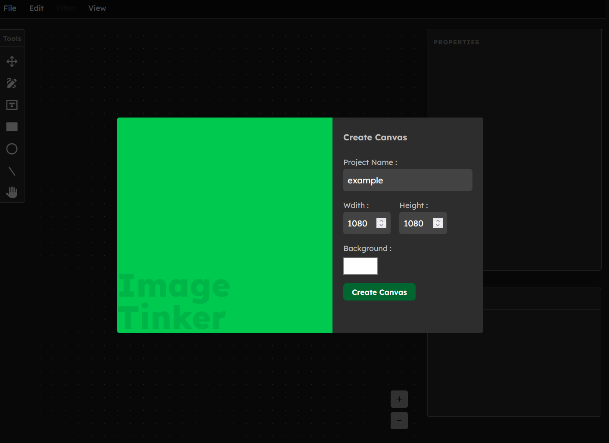

Dixit Regmi
Web Developer
I create polished user interfaces and interactive creative tools.
Skills
JavaScript
TypeScript
HTML
CSS
TailwindCSS
Git
GitHub
React
Next.js
C#
MySQL
Experience
Dec. 2025 – June 2026
Frontend Developer Intern
ASAP Digital by Easysewa Pvt. Ltd.
Built the frontend for a restaurant reservation platform using Next.js, turning UI/UX designs into a functional booking flow. Integrated RESTful APIs and applied responsive design for a seamless experience across devices.
About Me
Hi, I'm Dixit, a CSIT graduate. I love building meaningful, interactive software and enjoy the process of picking up a new idea and implementing it hands on to really understand how it works.
I previously interned at ASAP Digital as a Frontend Developer, where I got to apply my skills in a real world setting. I'm currently looking for an opportunity where I can keep learning, grow my skillset, and contribute to projects.
Outside of tech, I enjoy 3D modeling, graphic design, reading books, and watching movies.
Projects

Image Tinker
Developed a browser based image editor on HTML5 Canvas with React and TypeScript, supporting layers, shapes, freehand drawing, and text elements
Involvement
June 2026
Juniper Dev's Game Jam
Collaborated with a teammate to design, build, and ship a complete 2D platformer within a 7-day online game jam using Godot engine and GDScript.